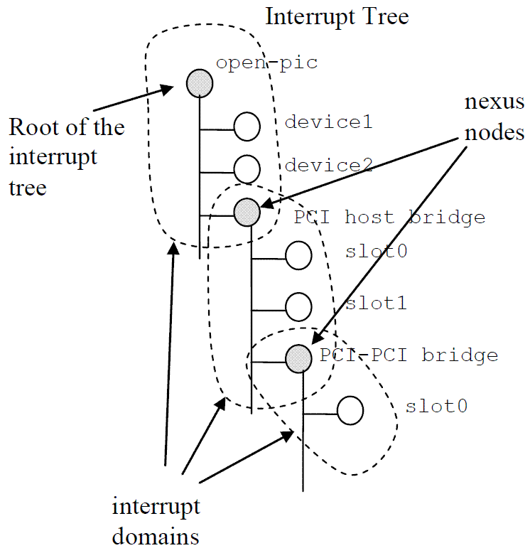

我想从下面三个方面来了解Device Tree：
1、为何要引入Device Tree，这个机制是用来解决什么问题的？
2、Device Tree的基础概念。
3、ARM linux中和Device Tree相关的代码分析。
一、 背景
在引入设备树前，内核中存在大量的各个board specific的源代码，这些源代码给linux内核的维护和发展带来的较大的工作量，增大了内核维护的困难程度，于是有人提出应该把board specific的源代码踢出kernel。所以设备树的机制被提了出来。设备树在本质上改变了原来用hardcode方式将HW 配置信息嵌入到内核代码的方法，改用bootloader传递一个DB的形式，这样可以给kernel带来较大的灵活性，Device Tree的设计目标就是如此。
在描述Device Tree的结构之前，我们先问一个基础问题：是否Device Tree要描述系统中的所有硬件信息？答案是否定的。基本上，那些可以动态探测到的设备是不需要描述的，例如USB device。不过对于SOC上的usb host controller，它是无法动态识别的，需要在device tree中描述。同样的道理，在computer system中，PCI device可以被动态探测到，不需要在device tree中描述，但是PCI bridge如果不能被探测，那么就需要描述之。
# 二、基本结构
为了了解Device Tree的结构，我们首先给出一个Device Tree的示例：
/ o device-tree
|- name = “device-tree”
|- model = “MyBoardName”
|- compatible = “MyBoardFamilyName”
|- #address-cells = <2>
|- #size-cells = <2>
|- linux,phandle = <0>
|
o cpus
| | - name = “cpus”
| | - linux,phandle = <1>
| | - #address-cells = <1>
| | - #size-cells = <0>
| |
| o PowerPC,970@0
| |- name = “PowerPC,970”
| |- device_type = “cpu”
| |- reg = <0>
| |- clock-frequency = <0x5f5e1000>
| |- 64-bit
| |- linux,phandle = <2>
|
o memory@0
| |- name = “memory”
| |- device_type = “memory”
| |- reg = <0x00000000 0x00000000 0x00000000 0x20000000>
| |- linux,phandle = <3>
|
o chosen
|- name = “chosen”
|- bootargs = “root=/dev/sda2”
|- linux,phandle = <4>
从上图中可以看出，device tree的基本单元是node。这些node被组织成树状结构，除了root node，每个node都只有一个parent。一个device tree文件中只能有一个root node。每个node中包含了若干的property/value来描述该node的一些特性。每个node用节点名字（node name）标识，节点名字的格式是node-name@unit-address。如果该node没有reg属性（后面会描述这个property），那么该节点名字中必须不能包括@和unit-address。unit-address的具体格式是和设备挂在那个bus上相关。例如对于cpu，其unit-address就是从0开始编址，以此加一。而具体的设备，例如以太网控制器，其unit-address就是寄存器地址。root node的node name是确定的，必须是“/”。
/ {
compatible = “samsung,s3c24xx”; －－－－－－－－－－－－－－－－－－－（A）
interrupt-parent = <&intc>; －－－－－－－－－－－－－－－－－－－－－－（B）
aliases {
pinctrl0 = &pinctrl_0; －－－－－－－－－－－－－－－－－－－－－－－－（C）
};
intc:interrupt-controller@4a000000 { －－－－－－－－－－－－－－－－－－（D）
compatible = “samsung,s3c2410-irq”;
reg = <0x4a000000 0x100>;
interrupt-controller;
#interrupt-cells = <4>;
};
serial@50000000 { －－－－－－－－－－－－－－－－－－－－－－（E）
compatible = “samsung,s3c2410-uart”;
reg = <0x50000000 0x4000>;
interrupts = <1 0 4 28>, <1 1 4 28>;
status = “disabled”;
};
pinctrl_0: pinctrl@56000000 {－－－－－－－－－－－－－－－－－－（F）
reg = <0x56000000 0x1000>;
wakeup-interrupt-controller {
compatible = “samsung,s3c2410-wakeup-eint”;
interrupts = <0 0 0 3>,
<0 0 1 3>,
<0 0 2 3>,
<0 0 3 3>,
<0 0 4 4>,
<0 0 5 4>;
};
};
……
};
（A）在描述compatible属性之前要先描述model属性。model属性指明了该设备属于哪个设备生产商的哪一个model。一般而言，我们会给model赋值“manufacturer,model”。例如model = “samsung,s3c24xx”。samsung是生产商，s3c24xx是model类型，指明了具体的是哪一个系列的SOC。OK，现在我们回到compatible属性，该属性的值是string list，定义了一系列的modle（每个string是一个model）。这些字符串列表被操作系统用来选择用哪一个driver来驱动该设备。假设定义该属性：compatible = “aaaaaa”, “bbbbb”。那么操作操作系统可能首先使用aaaaaa来匹配适合的driver，如果没有匹配到，那么使用字符串bbbbb来继续寻找适合的driver，对于本例，compatible = “samsung,s3c24xx”，这里只定义了一个modle而不是一个list。对于root node，compatible属性是用来匹配machine type的（在device tree代码分析文章中会给出更细致的描述）。对于普通的HW block的节点，例如interrupt-controller，compatible属性是用来匹配适合的driver的。
（B）具体各个HW block的interrupt source是如何物理的连接到interruptcontroller的呢？在dts文件中是用interrupt-parent这个属性来标识的。且慢，这里定义interrupt-parent属性的是root node，难道root node会产生中断到interrupt controller吗？当然不会，只不过如果一个能够产生中断的device node没有定义interrupt-parent的话，其interrupt-parent属性就是跟随parent node。因此，与其在所有的下游设备中定义interrupt-parent，不如统一在root node中定义了。
intc是一个lable，标识了一个device node（在本例中是标识了interrupt-controller@4a000000 这个device node）。实际上，interrupt-parent属性值应该是是一个u32的整数值（这个整数值在Device Tree的范围内唯一识别了一个device node，也就是phandle），不过，在dts文件中中，可以使用类似c语言的Labels and References机制。定义一个lable，唯一标识一个node或者property，后续可以使用&来引用这个lable。DTC会将lable转换成u32的整数值放入到DTB中，用户层面就不再关心具体转换的整数值了。
关于interrupt，我们值得进一步描述。在Device Tree中，有一个概念叫做interrupt tree，也就是说interrupt也是一个树状结构。我们以下图为例（该图来自Power_ePAPR_APPROVED_v1.1）：
.
系统中有一个interrrupt tree的根节点，device1、device2以及PCI host bridge的interrupt line都是连接到root interrupt controller的。PCI host bridge设备中有一些下游的设备，也会产生中断，但是他们的中断都是连接到PCI host bridge上的interrupt controller（术语叫做interrupt nexus），然后报告到root interrupt controller的。每个能产生中断的设备都可以产生一个或者多个interrupt，每个interrupt source（另外一个术语叫做interrupt specifier，描述了interrupt source的信息）都是限定在其所属的interrupt domain中。
在了解了上述的概念后，我们可以回头再看看interrupt-parent这个属性。其实这个属性是建立interrupt tree的关键属性。它指明了设备树中的各个device node如何路由interrupt event。另外，需要提醒的是interrupt controller也是可以级联的，上图中没有表示出来。那么在这种情况下如何定义interrupt tree的root呢？那个没有定义interrupt-parent的interrupt controller就是root。
（C）pinctrl0是一个缩写，他是/pinctrl@56000000的别名。这里同样也是使用了Labels and References机制。
（D）intc（node name是interrupt-controller@4a000000 ，我这里直接使用lable）是描述interrupt controller的device node。根据S3C24xx的datasheet，我们知道interrupt controller的寄存器地址从0x4a000000开始，长度为0x100（实际2451的interrupt的寄存器地址空间没有那么长，0x4a000074是最后一个寄存器），也就是reg属性定义的内容。interrupt-controller属性为空，只是用来标识该node是一个interrupt controller而不是interrupt nexus（interrupt nexus需要在不同的interrupt domains之间进行翻译，需要定义interrupt-map的属性，本文不涉及这部分的内容）。#interrupt-cells 和#address-cells概念是类似的，也就是说，用多少个u32来标识一个interrupt source。我们可以看到，在具体HW block的interrupt定义中都是用了4个u32来表示，例如串口的中断是这样定义的：
interrupts = <1 0 4 28>, <1 1 4 28>;
（E） 从reg属性可以serial controller寄存器地址从0x50000000 开始，长度为0x4000。对于一个能产生中断的设备，必须定义interrupts这个属性。也可以定义interrupt-parent这个属性，如果不定义，则继承其parent node的interrupt-parent属性。 对于interrupt属性值，各个interrupt controller定义是不一样的，有的用3个u32表示，有的用4个。具体上面的各个数字的解释权归相关的interrupt controller所有。对于中断属性的具体值的描述我们会在device tree的第三份文档－代码分析中描述。
（F）这个node是描述GPIO控制的。这个节点定义了一个wakeup-interrupt-controller 的子节点，用来描述有唤醒功能的中断源。
DTB整体结构
经过Device Tree Compiler编译，Device Tree source file变成了Device Tree Blob（又称作flattened device tree）的格式。Device Tree Blob的数据组织如下图所示：
 .
.
<1> DTB header
对于DTB header，其各个成员解释如下：
👉header field name (description)
👉magic (用来识别DTB的。通过这个magic，kernel可以确定bootloader传递的参数block是一个DTB还是tag list)
👉totalsize (DTB的total size)
👉off_dt_struct （device tree structure block的offset）
👉off_dt_strings （device tree strings block的offset）
👉off_mem_rsvmap （offset to memory reserve map。有些系统，我们也许会保留一些memory有特殊用途（例如DTB或者initrd image），或者在有些DSP+ARM的SOC platform上，有写memory被保留用于ARM和DSP进行信息交互。这些保留内存不会进入内存管理系统）
👉version （该DTB的版本）
👉last_comp_version （兼容版本信息）
👉boot_cpuid_phys （我们在哪一个CPU（用ID标识）上booting）
👉dt_strings_size （device tree strings block的size。和off_dt_strings一起确定了strings block在内存中的位置）
dt_struct_size （ device tree structure block的size。和off_dt_struct一起确定了device tree structure block在内存中的位置）
<2> memory reserve map的格式描述
这个区域包括了若干的reserve memory描述符。每个reserve memory描述符是由address和size组成。其中address和size都是用U64来描述。
<3> device tree structure block的格式描述
device tree structure block区域是由若干的分片组成，每个分片开始位置都是保存了token，以此来描述该分片的属性和内容。共计有5种token：
（1）FDT_BEGIN_NODE (0x00000001)。该token描述了一个node的开始位置，紧挨着该token的就是node name（包括unit address）
（2）FDT_END_NODE (0x00000002)。该token描述了一个node的结束位置。
（3）FDT_PROP (0x00000003)。该token描述了一个property的开始位置，该token之后是两个u32的数据，分别是length和name offset。length表示该property value data的size。name offset表示该属性字符串在device tree strings block的偏移值。length和name offset之后就是长度为length具体的属性值数据。
（4）FDT_NOP (0x00000004)。
（5）FDT_END (0x00000009)。该token标识了一个DTB的结束位置。
一个可能的DTB的结构如下：
（1）若干个FDT_NOP（可选）
（2）FDT_BEGIN_NODE
node name
paddings
（3）若干属性定义。
（4）若干子节点定义。（被FDT_BEGIN_NODE和FDT_END_NODE包围）
（5）若干个FDT_NOP（可选）
（6）FDT_END_NODE
（7）FDT_END
<4> device tree strings bloc的格式描述
device tree strings bloc定义了各个node中使用的属性的字符串表。由于很多属性会出现在多个node中，因此，所有的属性字符串组成了一个string block。这样可以压缩DTB的size。
三、代码分析
介绍Device Tree相关的数据流，对对ARM linux kernel的代码进行解析。数据流包括：
1、初始化流程。也就是扫描dtb并将其转换成Device Tree Structure。
2、传递运行时参数传递以及platform的识别流程分析
3、如何将Device Tree Structure并入linux kernel的设备驱动模型。
<1> Device Tree完成运行时参数传递以及platform的识别功能
dtb地址的传递可以通过bootloader告诉内核（CONFIG_ARM_ATAG_DTB_COMPAT），也可以在制作内核镜像的时候引进 CONFIG_ARM_APPENDED_DTB告诉内核在紧跟着内核的地址里查找DTB文件（cat arch/arm/boot/dts/at91sam9x35ek.dtb >> arch/arm/boot/zImage），内核中对DTB结构的处理流程从以下函数开始(start_kernel()->setup_arch()->setup_machine_fdt()->early_init_dt_scan_nodes())
void init setup_arch(char **cmdline_p)
{
const struct machine_desc *mdesc;
……
mdesc = setup_machine_fdt(atags_pointer);
if (!mdesc)
mdesc = setup_machine_tags(__atags_pointer, __machine_arch_type);
machine_desc = mdesc;
machine_name = mdesc->name;
……
}
对于如何确定HW platform这个问题，旧的方法是静态定义若干的machine描述符（struct machine_desc ），在启动过程中，通过machine type ID作为索引，在这些静态定义的machine描述符中扫描，找到那个ID匹配的描述符。在新的内核中，首先使用setup_machine_fdt来setup machine描述符，如果返回NULL，才使用传统的方法setup_machine_tags来setup machine描述符。传统的方法需要给出machine_arch_type（bootloader通过r1寄存器传递给kernel的）和tag list的地址（用来进行tag parse）。machine_arch_type用来寻找machine描述符；tag list用于运行时参数的传递。随着内核的不断发展，相信有一天linux kernel会完全抛弃tag list的机制。
<2> 匹配platform（machine描述符）
setup_machine_fdt函数的功能就是根据Device Tree的信息，找到最适合的machine描述符。具体代码如下：
const struct machine_desc * __init setup_machine_fdt(unsigned int dt_phys)
{
const struct machine_desc *mdesc, *mdesc_best = NULL;
if (!dt_phys || early_init_dt_verify(phys_to_virt(dt_phys)))
return NULL;
mdesc = of_flat_dt_match_machine(mdesc_best, arch_get_next_mach);
if (!mdesc) {
出错处理
}
/* We really don't want to do this, but sometimes firmware provides buggy data */
if (mdesc->dt_fixup)
mdesc->dt_fixup();
early_init_dt_scan_nodes();
/* Change machine number to match the mdesc we're using */
__machine_arch_type = mdesc->nr;
return mdesc;
}early_init_dt_scan函数有两个功能，一个是为后续的DTB scan进行准备工作，另外一个是运行时参数传递。
/* of_flat_dt_match_machine - Iterate match tables to find matching machine.
* @default_match: A machine specific ptr to return in case of no match.
* @get_next_compat: callback function to return next compatible match table.
*
* Iterate through machine match tables to find the best match for the machine
* compatible string in the FDT.
*/
const void * __init of_flat_dt_match_machine(const void *default_match,
const void * (*get_next_compat)(const char * const**))of_flat_dt_match_machine是在machine描述符的列表中scan，找到最合适的那个machine描述符。我们首先看如何组成machine描述符的列表。和传统的方法类似，也是静态定义的。DT_MACHINE_START和MACHINE_END用来定义一个machine描述符。编译的时候，compiler会把这些machine descriptor放到一个特殊的段中（.arch.info.init），形成machine描述符的列表。machine描述符用下面的数据结构来标识（删除了不相关的member）：
struct machine_desc {
unsigned int nr; /* architecture number */
const char *const *dt_compat; /* array of device tree 'compatible' strings */
……
};nr成员就是过去使用的machine type ID。内核machine描述符的table有若干个entry，每个都有自己的ID。bootloader传递了machine type ID，指明使用哪一个machine描述符。目前匹配machine描述符使用compatible strings，也就是dt_compat成员，这是一个string list，定义了这个machine所支持的列表。在扫描machine描述符列表的时候需要不断的获取下一个machine描述符的compatible字符串的信息，具体的代码如下：
static const void * __init arch_get_next_mach(const char *const **match)
{
static const struct machine_desc *mdesc = __arch_info_begin;
const struct machine_desc *m = mdesc;
if (m >= __arch_info_end)
return NULL;
mdesc++;
*match = m->dt_compat;
return m;
}__arch_info_begin指向machine描述符列表第一个entry。通过mdesc++不断的移动machine描述符指针（Note：mdesc是static的）。match返回了该machine描述符的compatible string list。具体匹配的算法倒是很简单，就是比较字符串而已，一个是root node的compatible字符串列表，一个是machine描述符的compatible字符串列表，得分最低的（最匹配的）就是我们最终选定的machine type。
void __init early_init_dt_scan_nodes(void)
{
/* Retrieve various information from the /chosen node */
/* 扫描 /chosen node，保存运行时参数（bootargs）到boot_command_line，此外，还处理initrd相关的property，并保存在initrd_start和initrd_end这两个全局变量中 */
of_scan_flat_dt(early_init_dt_scan_chosen, boot_command_line);
/* Initialize {size,address}-cells info */
/* 扫描根节点，获取 {size,address}-cells信息，并保存在dt_root_size_cells和dt_root_addr_cells全局变量中 */
of_scan_flat_dt(early_init_dt_scan_root, NULL);
/* Setup memory, calling early_init_dt_add_memory_arch */
/* 扫描DTB中的memory node，并把相关信息保存在meminfo中，全局变量meminfo保存了系统内存相关的信息。*/
of_scan_flat_dt(early_init_dt_scan_memory, NULL);
}在系统初始化的过程中，我们需要将DTB转换成节点是device_node的树状结构，以便后续方便操作。具体的代码位于setup_arch->unflatten_device_tree中。
/**
* unflatten_device_tree - create tree of device_nodes from flat blob
*
* unflattens the device-tree passed by the firmware, creating the
* tree of struct device_node. It also fills the "name" and "type"
* pointers of the nodes so the normal device-tree walking functions
* can be used.
*/
void __init unflatten_device_tree(void)
{
__unflatten_device_tree(initial_boot_params, &of_root,
early_init_dt_alloc_memory_arch);
/* Get pointer to "/chosen" and "/aliases" nodes for use everywhere */
of_alias_scan(early_init_dt_alloc_memory_arch);
}我们用struct device_node 来抽象设备树中的一个节点，具体解释如下：
struct device_node {
const char *name; －－－－－－－－－－－－－－－－device node name
const char *type; 对应device_type的属性
phandle phandle; 对应该节点的phandle属性
const char *full_name; 从“/”开始的，表示该node的full path
struct fwnode_handle fwnode;
struct property *properties; 该节点的属性列表
struct property *deadprops; 如果需要删除某些属性，kernel并非真的删除，而是挂入到deadprops的列表
struct device_node *parent; parent、child以及sibling将所有的device node连接起来
struct device_node *child;
struct device_node *sibling;
struct kobject kobj;
unsigned long _flags;
void *data;
#if defined(CONFIG_SPARC)
const char *path_component_name;
unsigned int unique_id;
struct of_irq_controller *irq_trans;
#endif
};unflatten_device_tree函数的主要功能就是扫描DTB，将device node被组织成：
1、global list。全局变量struct device_node *of_allnodes就是指向设备树的global list
2、tree。
这些功能主要是在__unflatten_device_tree函数中实现，具体代码如下
参考文章： 蜗窝科技，www.wowotech.net。